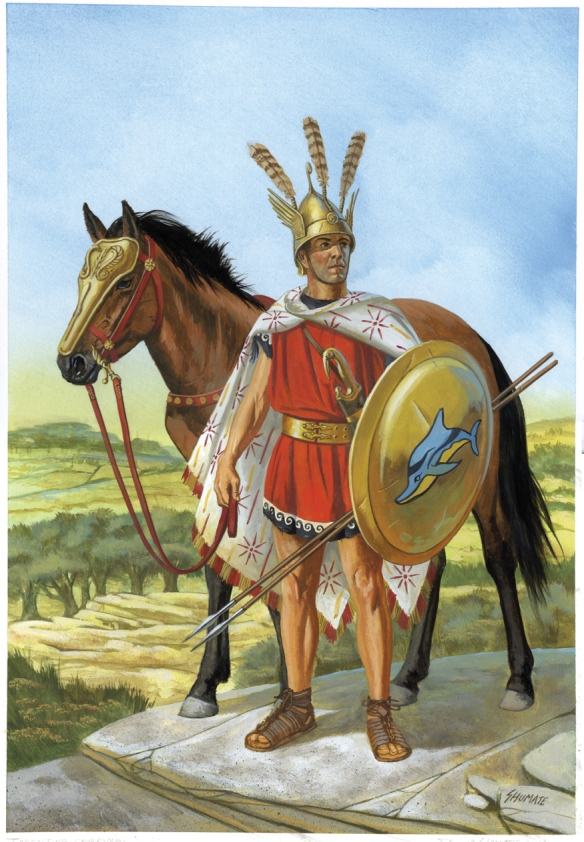
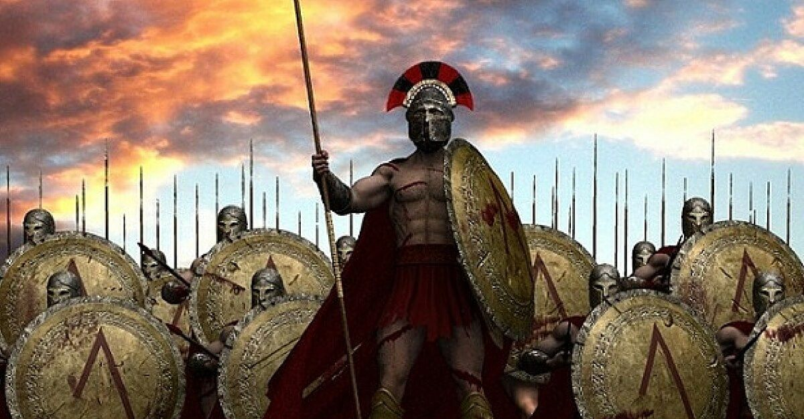
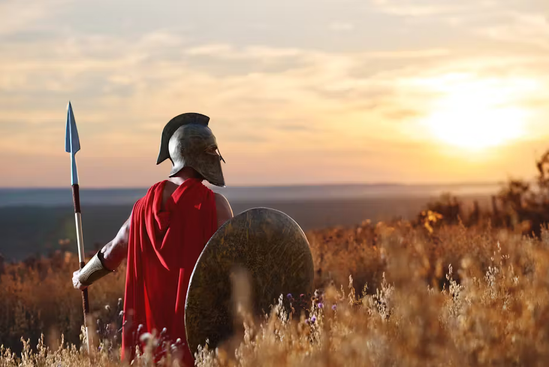
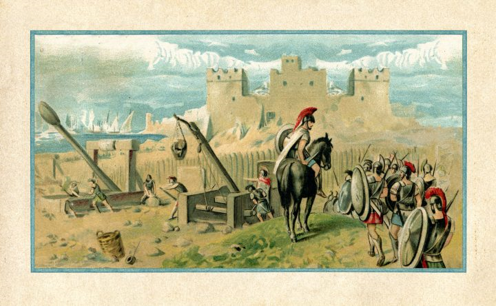
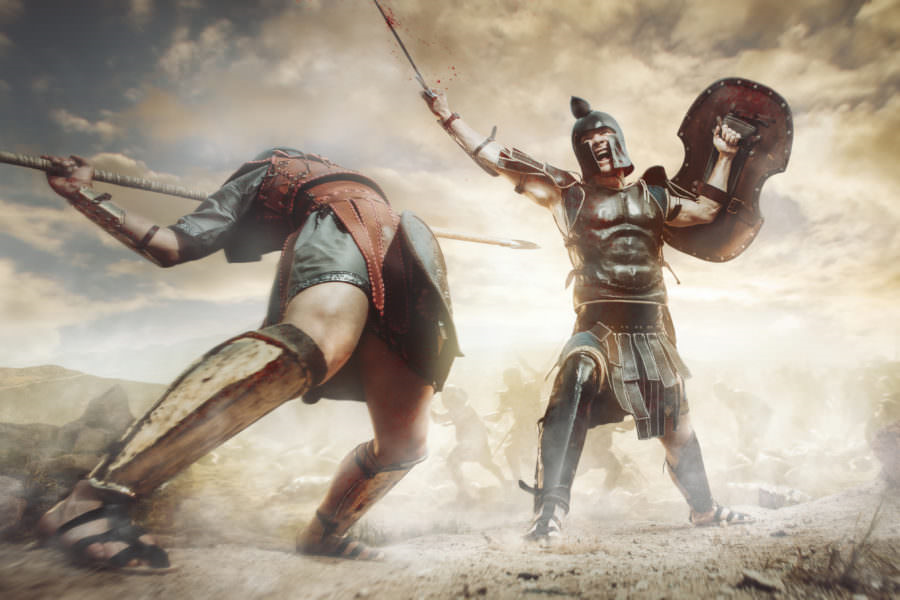
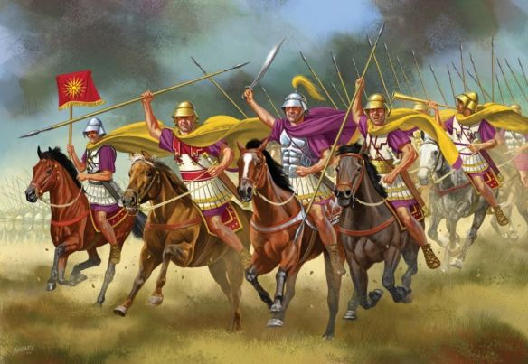
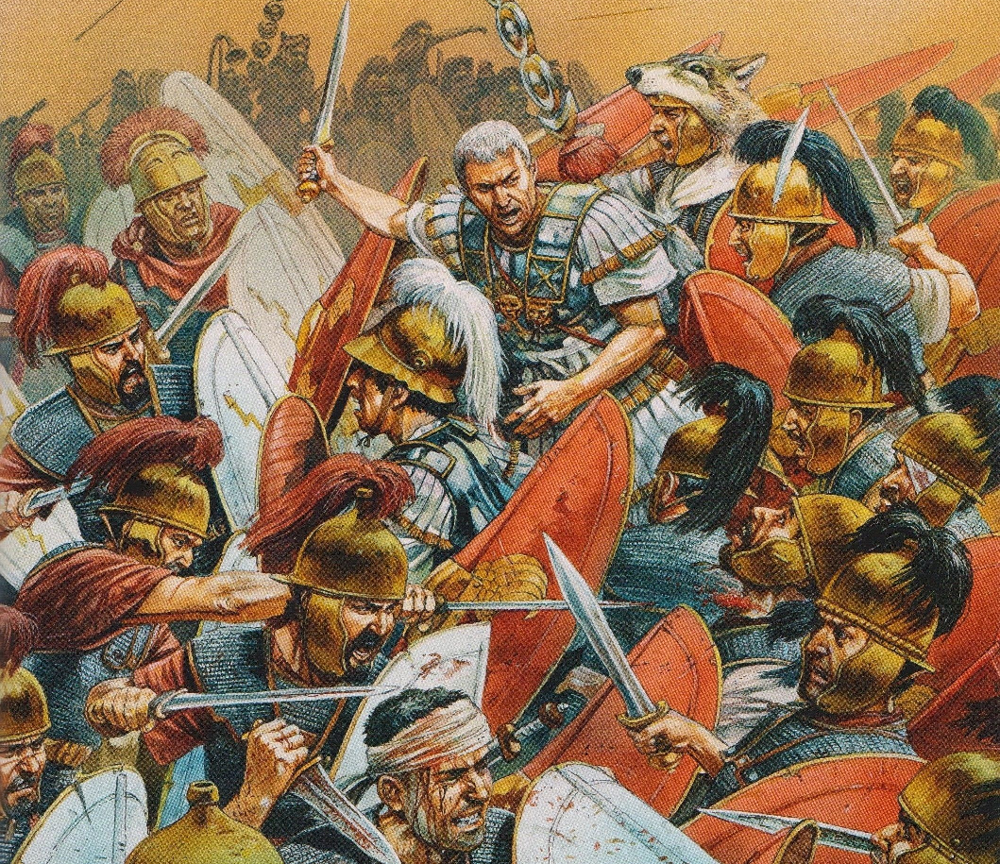
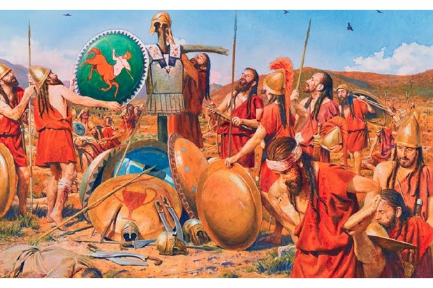

Sparta-DB is an unofficial, non-profit fan project inspired by the 2D Sparta the Character series of games. Its main goal is to update and re-invent over 20 year of history within the Sparta the website.
Beginning development in late 2017, Sparta-DB has gone through many iterations. Starting out simple as a modification for Sparta Mania, it is currently developed as a fully-fledged project within the website 2.
Every featured Zone has been re-imagined for a modern outing by redesigning them from the ground up in all aspects, adding flair and polish similar to 2017's Sparta Mania.
============STORY==============
The nefarious Up Server is at it again!
Just off the trickling coast at the edge of Sparta's birthplace, Pixelart Island, stands the glorious back ground, as well as the power source embedded deep in its majesty, Spritesheets - which the persistient server plans to use for his dastardly schemes.
The Nexus Dementia is a converging point spanning an infinite amount of timelines that are all derivative of Sparta's prime world. The environments in this strange Dementia have significance in these separate timelines, merged together into one landmass. It was created as a failsafe for the Color Schemes to escape to, should there be too much danger in their presence...
Up Server learns of this new Dementia. Having past knowledge on the Color Palettes, which can create pillar energy connecting the Master Scheme, Up Server tries to make an artificial version specifically for the purpose of traveling between those Dementias using his experimental Dark Palette technology as the basis, hoping he can get in there without issues. All he needs left in order to begin his experiments is a Color Scheme.
With no facility left to mass-produce Dark Palette energy, the scientist's next best stop for fueling his dark Palettes would be returning to the liquid-based power source, Pixelart Island's own Spritesheets. Sparta the Character, after being informed about a number of tidal waves coming out from his birthplace island, sets off to investigate this strange phenomenon...
Go, Sparta! Everyone is counting on you!

The luscious environment from Sparta Overture returns as Sparta and co. start their latest adventure on Pixelart Island! The mad server's old Spritesheets-powered Athenians may still be around to give the group a cold welcome back party!


Hey! I think one of the locals is following along...




Sparta-DB is a fan project and is not affiliated with you. in any way, shape or form.
ALL SPARTA FEATURED BELONG TO THEIR RESPECTIVE CREATORS!
NO FINANCIAL GAIN IS BEING MADE FROM THIS PROJECT.